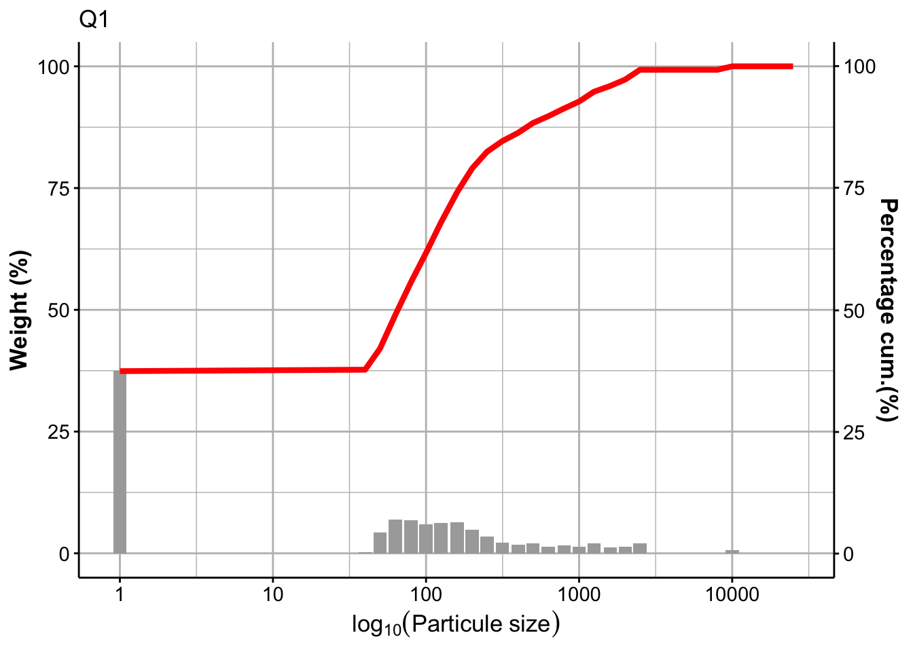
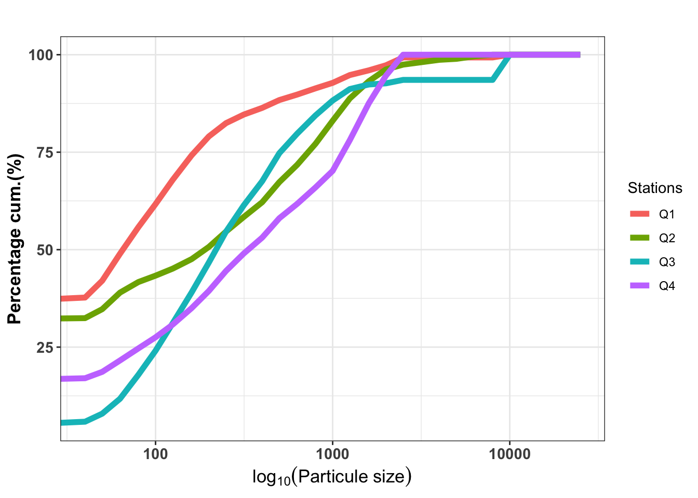
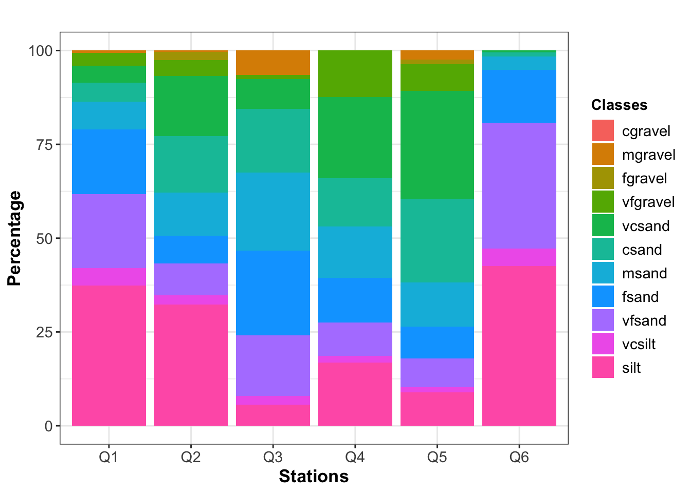
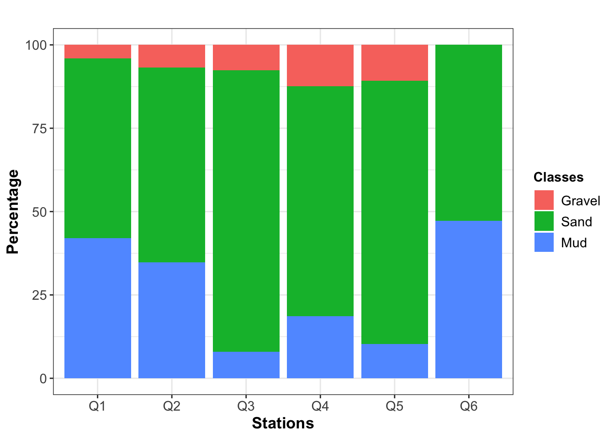

La version 2.2 de G2Sd est disponible sur github.
devtools::install_github("gallonr/G2Sd")G2Sd a été développé de manière à décrire le sédiment à partir de tamis utilisant la nomenclature métrique ou phi.
Cette matrice doit comporter en colonne les stations échantillonnées et en ligne les ouvertures de tamis (microns ou phi)
require(G2Sd)
data(granulo)
granulo[,1:17]| Q1 | Q2 | Q3 | Q4 | Q5 | Q6 | Q7 | Q8 | Q9 | Q10 | Q11 | Q12 | Q13 | Q14 | Q15 | Q16 | Q17 | |
|---|---|---|---|---|---|---|---|---|---|---|---|---|---|---|---|---|---|
| 25000 | 0.00 | 0.00 | 0.00 | 0.00 | 0.00 | 0.00 | 0.00 | 0.00 | 0.00 | 0.00 | 0.00 | 0.00 | 0.00 | 0.00 | 0.00 | 0.00 | 0.00 |
| 20000 | 0.00 | 0.00 | 0.00 | 0.00 | 0.00 | 0.00 | 0.00 | 0.00 | 0.00 | 0.00 | 0.00 | 0.00 | 0.00 | 0.00 | 0.00 | 0.00 | 0.00 |
| 16000 | 0.00 | 0.00 | 0.00 | 0.00 | 0.00 | 0.00 | 0.00 | 0.00 | 0.00 | 0.00 | 0.00 | 0.00 | 0.00 | 0.00 | 0.00 | 0.00 | 0.00 |
| 12500 | 0.00 | 0.00 | 0.00 | 0.00 | 0.00 | 0.00 | 0.00 | 0.00 | 0.00 | 0.00 | 0.00 | 0.00 | 0.00 | 0.00 | 0.00 | 0.00 | 0.00 |
| 10000 | 0.35 | 0.00 | 2.20 | 0.00 | 1.30 | 0.00 | 1.20 | 1.50 | 0.00 | 0.00 | 0.00 | 0.00 | 0.00 | 0.00 | 0.00 | 0.00 | 0.00 |
| 8000 | 0.00 | 0.25 | 0.00 | 0.00 | 0.30 | 0.00 | 0.10 | 0.00 | 0.00 | 0.00 | 0.00 | 0.00 | 0.00 | 1.50 | 0.00 | 0.00 | 1.60 |
| 6300 | 0.00 | 0.40 | 0.00 | 0.00 | 0.30 | 0.00 | 0.00 | 0.25 | 0.00 | 0.00 | 0.00 | 0.00 | 0.00 | 1.50 | 0.00 | 0.00 | 2.70 |
| 5000 | 0.00 | 0.15 | 0.00 | 0.00 | 0.20 | 0.00 | 0.15 | 0.40 | 0.00 | 0.00 | 0.00 | 0.00 | 0.00 | 1.75 | 0.00 | 0.00 | 3.10 |
| 4000 | 0.00 | 0.75 | 0.00 | 0.00 | 0.30 | 0.00 | 0.60 | 0.60 | 0.00 | 0.00 | 0.00 | 0.00 | 0.00 | 1.70 | 0.00 | 0.00 | 5.10 |
| 2500 | 1.00 | 0.75 | 0.30 | 3.30 | 1.40 | 0.00 | 0.45 | 0.65 | 0.05 | 0.00 | 0.00 | 0.40 | 0.00 | 5.70 | 0.00 | 0.00 | 6.75 |
| 2000 | 0.65 | 1.85 | 0.10 | 4.35 | 3.30 | 0.00 | 1.45 | 1.55 | 0.05 | 0.00 | 0.00 | 0.50 | 0.00 | 7.05 | 0.00 | 0.00 | 8.65 |
| 1600 | 0.60 | 2.70 | 0.40 | 5.80 | 5.20 | 0.00 | 1.80 | 2.00 | 0.10 | 0.00 | 0.00 | 0.80 | 0.15 | 6.00 | 0.20 | 0.00 | 8.30 |
| 1250 | 1.00 | 3.50 | 1.00 | 4.85 | 7.20 | 0.15 | 2.50 | 2.75 | 0.30 | 0.10 | 0.10 | 1.30 | 0.10 | 5.85 | 0.25 | 0.15 | 8.60 |
| 1000 | 0.70 | 3.60 | 1.30 | 2.60 | 6.50 | 0.10 | 2.65 | 2.80 | 0.30 | 0.10 | 0.10 | 1.15 | 0.10 | 3.65 | 0.15 | 0.05 | 8.30 |
| 800 | 0.80 | 3.30 | 1.60 | 2.60 | 5.60 | 0.10 | 2.80 | 2.75 | 0.35 | 0.10 | 0.10 | 1.10 | 0.10 | 2.40 | 0.20 | 0.05 | 8.25 |
| 630 | 0.70 | 2.70 | 1.70 | 2.25 | 4.30 | 0.20 | 2.70 | 2.30 | 0.35 | 0.10 | 0.10 | 0.90 | 0.10 | 1.45 | 0.15 | 0.15 | 5.50 |
| 500 | 1.00 | 3.15 | 2.45 | 3.05 | 4.60 | 0.30 | 3.90 | 2.70 | 0.55 | 0.20 | 0.10 | 1.15 | 0.15 | 1.55 | 0.20 | 0.15 | 2.65 |
| 400 | 0.85 | 2.30 | 2.10 | 2.50 | 2.95 | 0.35 | 3.20 | 1.90 | 0.60 | 0.20 | 0.10 | 0.80 | 0.10 | 1.10 | 0.15 | 0.10 | 0.75 |
| 315 | 1.10 | 2.30 | 2.30 | 2.75 | 2.55 | 0.50 | 3.35 | 1.90 | 0.70 | 0.30 | 0.20 | 0.80 | 0.10 | 1.10 | 0.20 | 0.15 | 0.40 |
| 250 | 1.70 | 2.40 | 2.70 | 3.15 | 2.30 | 0.95 | 3.95 | 2.15 | 1.40 | 0.60 | 0.25 | 0.90 | 0.20 | 1.00 | 0.40 | 0.35 | 0.40 |
| 200 | 2.40 | 1.90 | 2.60 | 2.70 | 1.90 | 1.40 | 4.25 | 2.25 | 1.70 | 0.90 | 0.40 | 0.80 | 0.50 | 0.50 | 0.50 | 0.50 | 0.00 |
| 160 | 3.15 | 1.50 | 2.70 | 2.60 | 1.95 | 2.50 | 5.50 | 2.80 | 2.85 | 1.90 | 0.70 | 0.90 | 0.70 | 0.20 | 0.70 | 1.00 | 0.00 |
| 125 | 3.10 | 1.10 | 2.40 | 2.00 | 1.65 | 3.30 | 4.40 | 2.00 | 2.90 | 3.30 | 0.70 | 0.90 | 0.85 | 0.10 | 0.85 | 1.55 | 0.00 |
| 100 | 2.95 | 1.00 | 2.10 | 1.75 | 1.65 | 5.25 | 3.60 | 1.30 | 2.30 | 4.80 | 0.55 | 1.00 | 1.00 | 0.10 | 1.10 | 2.10 | 0.00 |
| 80 | 3.40 | 1.65 | 2.10 | 1.90 | 1.80 | 7.10 | 3.40 | 1.30 | 2.30 | 6.60 | 0.60 | 2.05 | 1.40 | 0.00 | 2.10 | 3.25 | 0.00 |
| 63 | 3.45 | 2.60 | 1.30 | 1.80 | 1.60 | 4.80 | 2.35 | 1.80 | 2.10 | 5.20 | 1.50 | 3.40 | 1.90 | 0.00 | 4.30 | 3.85 | 0.00 |
| 50 | 2.15 | 1.40 | 0.70 | 1.00 | 0.90 | 2.20 | 1.10 | 1.00 | 1.15 | 2.30 | 1.85 | 1.80 | 1.40 | 0.00 | 2.30 | 1.70 | 0.00 |
| 40 | 0.15 | 0.05 | 0.10 | 0.10 | 0.00 | 0.20 | 0.10 | 0.10 | 0.10 | 0.45 | 0.15 | 0.25 | 0.40 | 0.00 | 0.50 | 0.50 | 0.00 |
| 0 | 18.65 | 19.75 | 1.90 | 10.35 | 5.85 | 21.80 | 5.70 | 15.70 | 15.85 | 21.65 | 29.45 | 19.50 | 18.10 | 0.20 | 27.25 | 17.40 | 0.00 |
granstat()Cette fonction est le cœur de calcul pour définir les caractéristiques des sédiments. Elle intègre trois statistiques descriptives :
Pour les détails des modes de calcul et l’interprétation des indices se référer à Fournier et al. (2012).
Le resultat de la fonction granstat()est une liste comportant les éléments suivants :
$stat: contient le ou les tableaux des statistiques descriptives$index: tableau regroupant les différents indices : D5,D10,D16,…$sedim: Description du ou des sédimentsgranstat(granulo)## $stat
## $stat$arith
## # A tibble: 21 x 5
## # Groups: samples [21]
## samples mean.arith.um sd.arith.um skewness.arith.um kurtosis.arith.um
## <chr> <dbl> <dbl> <dbl> <dbl>
## 1 Q1 31.0 95.0 7.82 76.8
## 2 Q2 64.1 122. 4.20 23.5
## 3 Q3 99.9 240. 3.39 12.8
## 4 Q4 74.1 77.7 0.873 2.43
## 5 Q5 106. 164. 4.08 21.2
## 6 Q6 7.66 12.2 4.85 38.1
## 7 Q7 71.6 162. 4.67 25.4
## 8 Q8 85.1 188. 3.83 17.7
## 9 Q9 12.6 24.0 4.52 30.8
## 10 Q10 6.80 11.0 5.38 47.0
## # … with 11 more rows
##
## $stat$geom
## # A tibble: 21 x 5
## # Groups: samples [21]
## samples mean.geom.um sd.geom.um skewness.geom.um kurtosis.geom.um
## <chr> <dbl> <dbl> <dbl> <dbl>
## 1 Q1 29.6 29847. 0.418 0.455
## 2 Q2 51.8 16727. 0.362 0.451
## 3 Q3 10.0 18622. 0.593 0.834
## 4 Q4 29.4 14674. 0.467 0.578
## 5 Q5 27.1 12054. 0.482 0.626
## 6 Q6 23.4 39937. 0.439 0.462
## 7 Q7 11.7 18369. 0.576 0.778
## 8 Q8 45.0 17675. 0.397 0.473
## 9 Q9 34.4 31269. 0.392 0.414
## 10 Q10 25.0 41298. 0.419 0.434
## # … with 11 more rows
##
## $stat$fowa
## # A tibble: 21 x 10
## # Groups: samples [21]
## samples mean.fw.um sd.fw.um skewness.fw.um kurtosis.fw.um mean.fw.phi
## <chr> <dbl> <dbl> <dbl> <dbl> <dbl>
## 1 Q1 14.5 21761. -0.220 0.989 4.24
## 2 Q10 6.66 10355. -0.561 0.793 5.01
## 3 Q11 1.46 9861. 0.109 0.875 6.53
## 4 Q12 12.3 29280. -0.0497 0.806 4.40
## 5 Q13 2.48 11545. -0.00496 0.743 6.00
## 6 Q14 2220. 3487. -0.0801 1.38 -0.798
## 7 Q15 2.36 11071. -0.0297 0.756 6.05
## 8 Q16 4.18 10784. -0.298 0.745 5.48
## 9 Q17 2315. 3041. 0.172 0.970 -0.840
## 10 Q18 28.3 26231. -0.112 0.926 3.56
## # … with 11 more rows, and 4 more variables: sd.fw.phi <dbl>,
## # skewness.fw.phi <dbl>, kurtosis.fw.phi <dbl>, sediment <chr>
##
##
## $index
## # A tibble: 21 x 16
## # Groups: samples [21]
## samples D10 D16 D25 D5 D50 D75 D84 D90 D95
## <chr> <dbl> <dbl> <dbl> <dbl> <dbl> <dbl> <dbl> <dbl> <dbl>
## 1 Q1 2.68 4.84 1.18e1 1.64 82.8 207. 373. 826. 1665.
## 2 Q10 2.30 3.78 7.99e0 1.52 63 102. 125. 156. 208.
## 3 Q11 1.59 2.10 3.18e0 1.26 10.1 32.2 59.8 89.6 176.
## 4 Q12 2.15 3.40 6.76e0 1.47 53.0 230. 591. 1022. 1506.
## 5 Q13 1.75 2.44 4.03e0 1.32 16.2 68.0 96.5 141. 222.
## 6 Q14 511. 775. 1.09e3 323. 1789. 2726. 3790. 5209. 7133.
## 7 Q15 1.75 2.46 4.07e0 1.32 16.6 66.9 84.5 120. 231.
## 8 Q16 2.01 3.06 5.75e0 1.42 33.1 87.5 111. 144. 200
## 9 Q17 715. 837. 9.95e2 595. 1629. 2773. 4203. 5111. 6731.
## 10 Q18 3.37 7.00 2.09e1 1.84 96.7 452. 893. 1332. 1908.
## # … with 11 more rows, and 6 more variables: `D90/D10` <dbl>, `D90-D10` <dbl>,
## # `D75/D25` <dbl>, `D75-D25` <dbl>, `Trask(So)` <dbl>, `Krumbein(Qd)` <dbl>
##
## $sedim
## $sedim$texture
## # A tibble: 21 x 5
## # Groups: samples [21]
## samples Gravel Mud Sand texture
## <chr> <dbl> <dbl> <dbl> <chr>
## 1 Q1 4.01 42.0 54.0 Slightly Gravelly Muddy Sand
## 2 Q10 0 50 50 Muddy Sand
## 3 Q11 0 85.1 14.9 Sandy Mud
## 4 Q12 2.23 53.3 44.4 Slightly Gravelly Sandy Mud
## 5 Q13 0 72.8 27.2 Sandy Mud
## 6 Q14 43.2 0.450 56.3 Sandy Gravel
## 7 Q15 0 72.4 27.6 Sandy Mud
## 8 Q16 0 59.4 40.6 Sandy Mud
## 9 Q17 39.3 0 60.7 Sandy Gravel
## 10 Q18 4.36 36.1 59.5 Slightly Gravelly Muddy Sand
## # … with 11 more rows
##
## $sedim$descript
## # A tibble: 21 x 12
## # Groups: samples [21]
## samples cgravel csand fgravel fsand mgravel msand silt vcsand vcsilt
## <chr> <dbl> <dbl> <dbl> <dbl> <dbl> <dbl> <dbl> <dbl> <dbl>
## 1 Q1 0 5.02 0 17.4 0.702 7.32 37.4 4.61 4.61
## 2 Q10 0 0.820 0 12.5 0 2.25 44.4 0.410 5.64
## 3 Q11 0 0.812 0 4.87 0 1.49 79.7 0.541 5.41
## 4 Q12 0 7.80 0 6.44 0 6.19 48.3 8.04 5.07
## 5 Q13 0 1.28 0 7.50 0 1.46 66.2 1.28 6.58
## 6 Q14 0 12.2 11.1 1.80 3.38 7.21 0.450 34.9 0
## 7 Q15 0 1.33 0 4.94 0 1.81 65.7 1.45 6.75
## 8 Q16 0 1.06 0 9.24 0 1.82 52.7 0.606 6.67
## 9 Q17 0 23.1 15.3 0 2.25 2.18 0 35.5 0
## 10 Q18 0 9.57 0.758 11.9 0 7.58 30.3 9.95 5.78
## # … with 11 more rows, and 2 more variables: vfgravel <dbl>, vfsand <dbl>granplot()La fonction granplot() permet de visualiser la distribution des sédiments.
La représentation d’une SEULE station
granplot(granulo,xc=1)
La représentation de PLUSIEURS stations
granplot(granulo,xc=1:4)## Warning: Transformation introduced infinite values in continuous x-axis
grandistrib()La fonction grandistrib() permet de visualiser la composition du sédiment. Deux échelles peuvent être choisies :
grandistrib(granulo[,1:6],scale="fine")
grandistrib(granulo[,1:6],scale="large")
Régis GALLON - Copyright © 2020